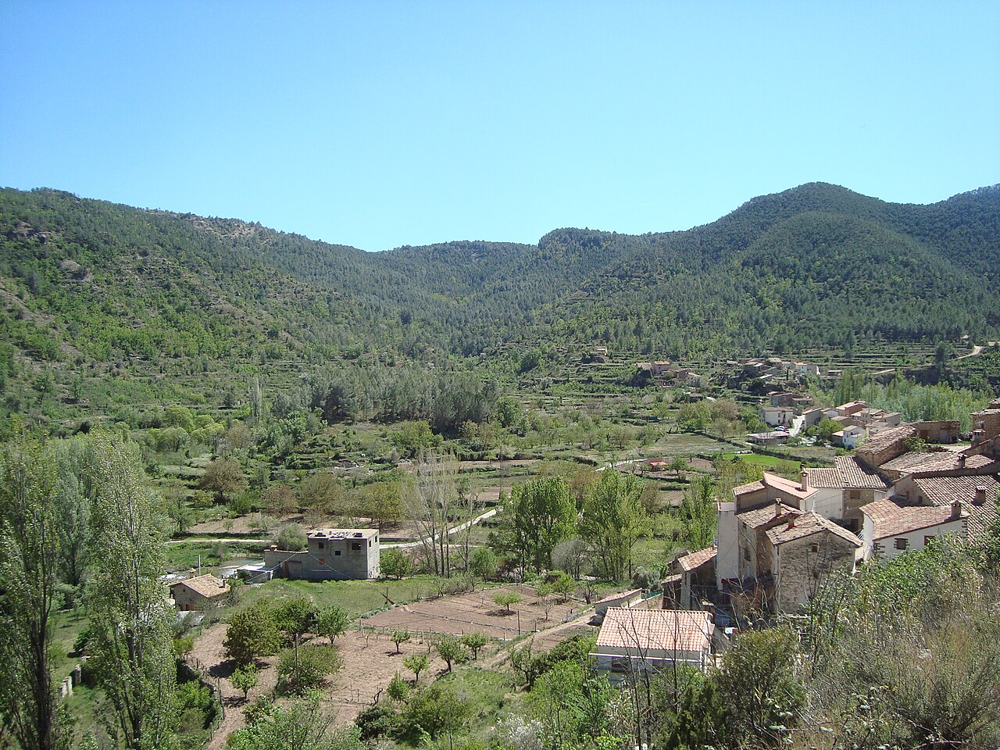

Qui soc
Qui hi ha darrere de L'Abelluco
Actualment, L'Abelluco el forma una sola persona: jo, Mario Escuder. A banda d'aquest projecte, soc professor de secundària.
Soc enginyer informàtic i tècnic superior en gestió forestal i del medi natural, i m'he format també en permacultura, agricultura ecològica i eines SIG.
Visc a Olba, a la vall del Millars, a la comarca de Gúdar-Javalambre (Terol). Des d'aquí ajunto dues coses que sovint van per separat: el programari i la cura del territori.

.JPG){kind=link}
La meva visió
Crec en una tecnologia petita i útil: eines que resolen un problema concret, fàcils d'entendre i que no fan dependre ningú d'una gran plataforma.
I crec que el territori necessita gent que el conegui i el cuidi. Les dades obertes, els mapes i les apps poden ajudar a prendre millors decisions sobre el bosc, l'aigua, els conreus o el paisatge, si es fan al costat de qui hi viu.
Transparència
Decàleg sobre l'ús de la IA
Faig servir intel·ligència artificial en part de la meva feina. Aquests són els compromisos amb què ho faig.
-
Ho dic clarament
Faig servir la IA i no ho amago, ni a la web ni als projectes.
-
Em planteja un dilema
Pel consum d'energia, pels drets d'autor, per la concentració de poder i pel seu efecte sobre la feina de moltes persones. No en tinc la resposta, i per això en faig un ús mesurat.
-
Un ús equilibrat i conscient
La faig servir quan aporta de debò, no per costum ni per anar més de pressa a qualsevol preu.
-
No és bona per a tot
L'aprofito per a tasques concretes: escriure i revisar codi, proves, documentació i traduccions. No la faig servir per substituir el coneixement del territori ni el tracte amb les persones.
-
Les decisions són meves
Què es fa, per a qui, com ha de funcionar i com ha de ser: les decisions creatives i estratègiques les prenc jo.
-
Superviso i valido tot el que fa
Llegeixo el codi, el provo amb casos reals i comprovo els càlculs abans de donar-lo per bo.
-
En responc jo
El resultat és responsabilitat meva. Si alguna cosa falla, darrere hi ha una persona que ho arregla.
-
Les teves dades, amb permís
No passo dades personals ni confidencials d'un client a cap servei d'IA sense el seu consentiment.
-
Programari lliure, sempre que es pot
Quan el projecte ho permet, el codi es publica amb llicència lliure i qualsevol pot revisar què fa i com ho fa.
-
Un decàleg viu
La IA canvia de pressa. Revisaré aquests compromisos sempre que calgui, i ho faré aquí, en obert.